En tømmerkonto er en spesialisert regnskapskonto som brukes innen skogbruk for å registrere og administrere inntekter fra salg av tømmer og andre skogprodukter. Denne kontoen følger særlige regler for skattemessig behandling og periodisering, og er en viktig del av hovedboken for virksomheter i skogbrukssektoren.
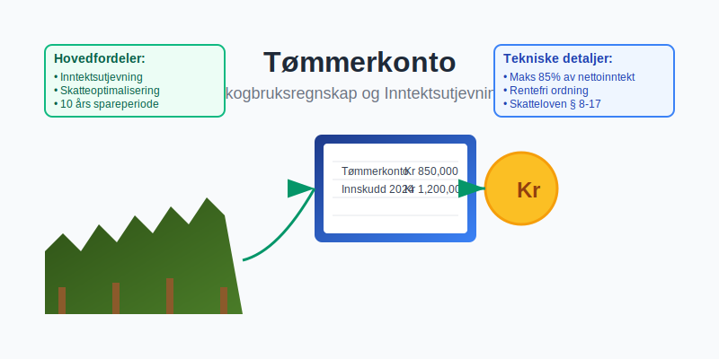
Definisjon og Grunnleggende Prinsipper
Tømmerkonto representerer en særordning i det norske skattesystemet som gir skogeiere mulighet til å utjevne inntektene fra skogsdrift over tid. Kontoen fungerer som et mellomledd mellom salg av tømmer og skattlegging av gevinsten.
Hovedkarakteristikker
- Innskuddsmulighet: Inntil 85% av nettoinntekten fra skogssalg
- Rentefrihet: Ingen renter påløper på innskudd
- Uttaksfleksibilitet: Kan tas ut når det passer skattemessig
- Tidsbegrensning: Må tas ut innen 10 år etter innskudd
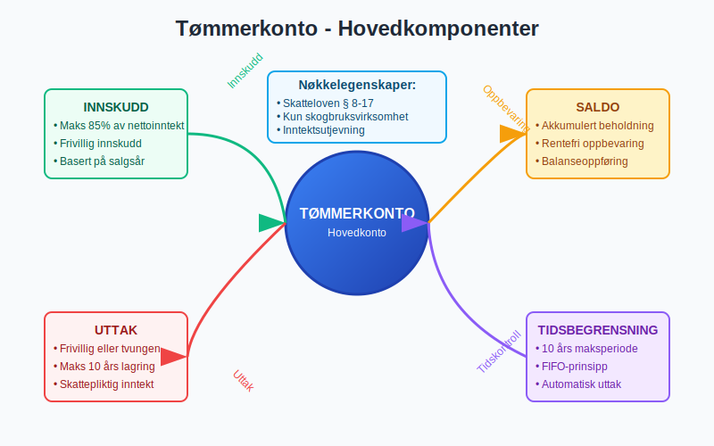
Juridisk Rammeverk og Regulering
Tømmerkontoordningen er regulert i skatteloven § 8-17 og tilhørende forskrifter. Ordningen ble etablert for å:
- Utjevne inntektssvingninger i skogbruk
- Kompensere for lang produksjonstid i skogsdrift
- Sikre bærekraftig skogforvaltning
Vilkår for Bruk
| Kriterium | Krav |
|---|---|
| Eierskap | Privat skogeier eller samvirke |
| Minimum areal | Produktiv skogareal |
| Driftsform | Aktiv skogsdrift |
| Regnskapsplikt | Ordentlig bokføring |
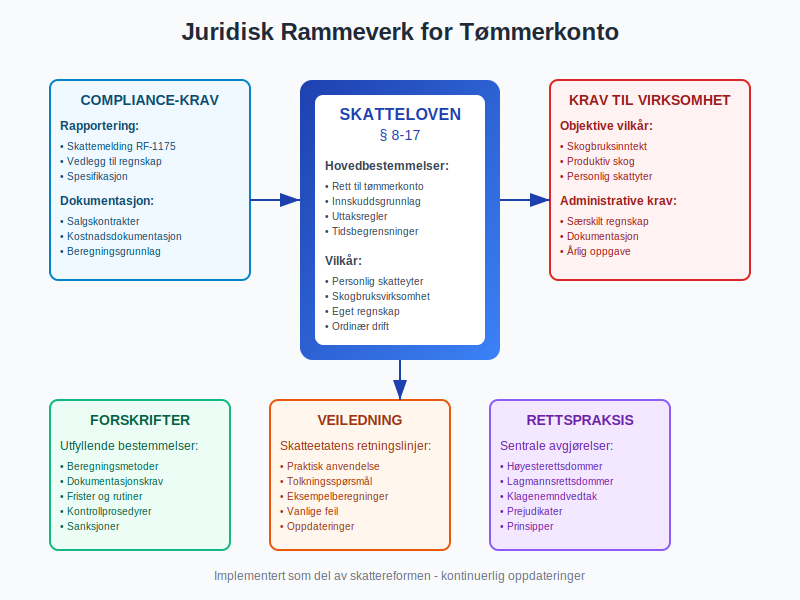
Regnskapsføring av Tømmerkonto
Innskudd på Tømmerkonto
Når tømmer selges og inntekt skal settes på tømmerkonto:
Bokføringseksempel:
Debet: Bank/Kundefordringer 1 000 000
Kredit: Tømmerinntekt 850 000
Kredit: Tømmerkonto 150 000
Uttak fra Tømmerkonto
Ved uttak fra tømmerkonto til skattepliktig inntekt:
Bokføringseksempel:
Debet: Tømmerkonto 150 000
Kredit: Tømmerinntekt 150 000
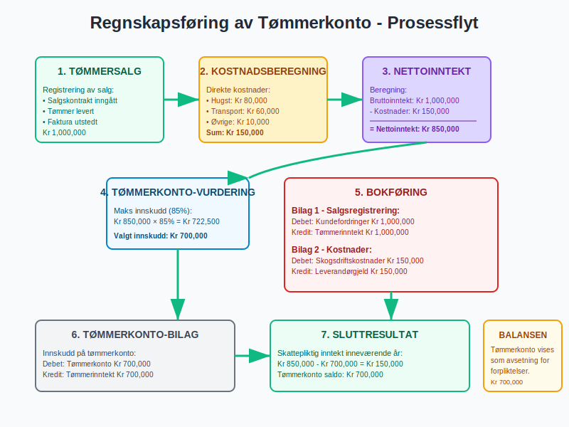
Skattemessig Behandling
Beregning av Innskuddsgrunnlag
Innskuddsgrunnlaget beregnes som:
Nettoinntekt = Bruttoinntekt - Direkte kostnader
- Bruttoinntekt: Salgssum for tømmer
- Direkte kostnader: Hugst, transport, veibygging
- Maksimalt innskudd: 85% av nettoinntekt
Uttaksregler
Uttak fra tømmerkonto kan skje:
- Frivillig: Når skogeier ønsker det
- Tvungen: Etter 10 år fra innskuddstidspunkt
- Delvis: Gradvis uttak over flere år
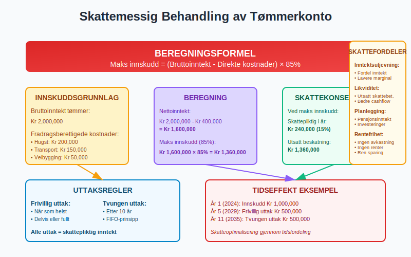
Praktiske Anvendelsesområder
Inntektsutjevning
Tømmerkontoordningen er særlig nyttig for:
- Store avvirkninger: Når hele bestand hugges
- Markedssvingninger: Ved høye tømmerpriser
- Pensjonssparing: Gradvis uttak ved pensjonering
- Investeringsfinansiering: Finansiering av skogstiltak
Strategisk Planlegging
Skogeiere kan bruke tømmerkonto til:
- Optimalisere skatteplanlegging
- Finansiere nye investeringer
- Sikre stabil inntekt over tid
- Redusere skattebelastning i toppinntektsår
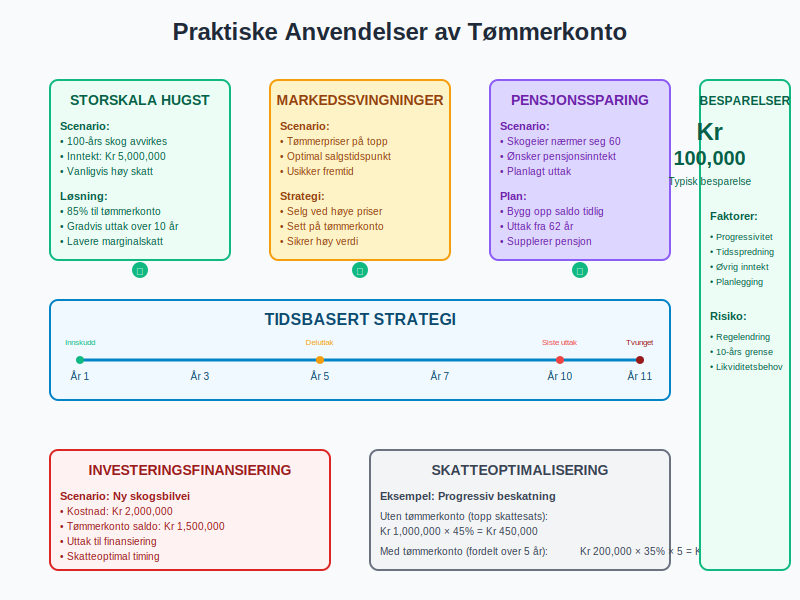
Beregningseksempel
Scenario: Storskala Tømmersalg
Grunnlagsdata:
- Salgssum tømmer: 2 000 000 kr
- Hugstskostnader: 300 000 kr
- Transportkostnader: 200 000 kr
- Øvrige kostnader: 100 000 kr
Beregning:
Nettoinntekt = 2 000 000 - (300 000 + 200 000 + 100 000)
Nettoinntekt = 1 400 000 kr
Maksimalt innskudd = 1 400 000 × 85% = 1 190 000 kr
Minimum skattepliktig = 1 400 000 × 15% = 210 000 kr
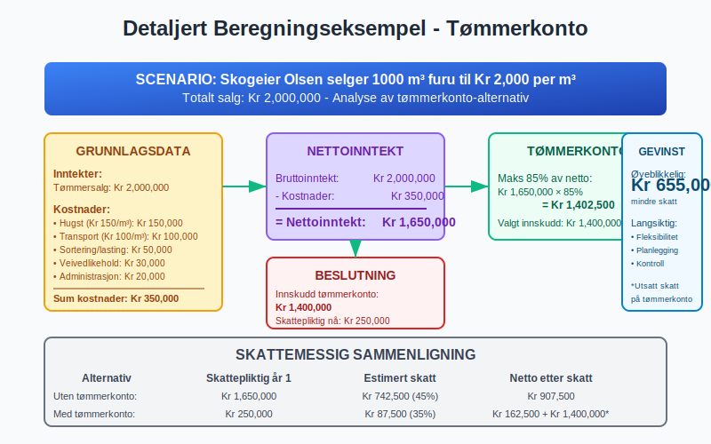
Administrasjon og Oppfølging
Dokumentasjonskrav
For tømmerkonto kreves:
- Salgsdokumentasjon: Kontrakter og fakturaer
- Kostnadsdokumentasjon: Bilag for alle fradrag
- Årlig oppgave: Spesifikasjon til skattemeldingen
- Saldooppfølging: Oversikt over innskudd og uttak
Regnskapsmessig Oppfølging
Tømmerkonto skal behandles som:
- Balansekonto: Vises i balansen som avsetning
- Ikke eiendel: Ikke tilgjengjelig for kreditorer
- Spesialformål: Kun til skattemessig utjevning
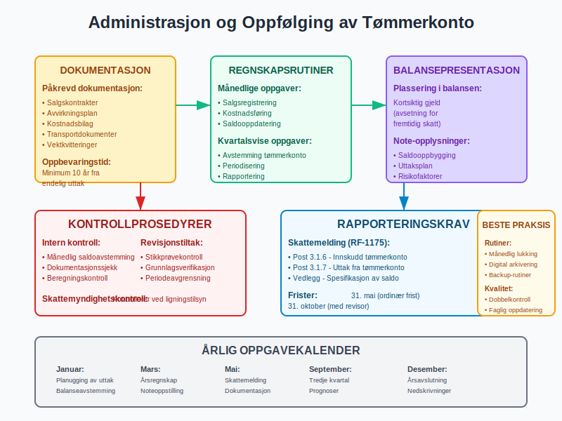
Digitale Løsninger og Verktøy
Moderne Skogbruksregnskap
Dagens digitale verktøy for tømmerkonto inkluderer:
- ERP-systemer tilpasset skogbruk
- Automatisk beregning av innskuddsgrunnlag
- Integrert rapportering
- Skatteplanleggingsverktøy
Integrasjon med Eksisterende Systemer
Tømmerkonto kan integreres med:
- Ordinære regnskapssystemer
- Skogbruksspesifikke systemer
- Skatteplanleggingsverktøy
- Rapporteringssystemer
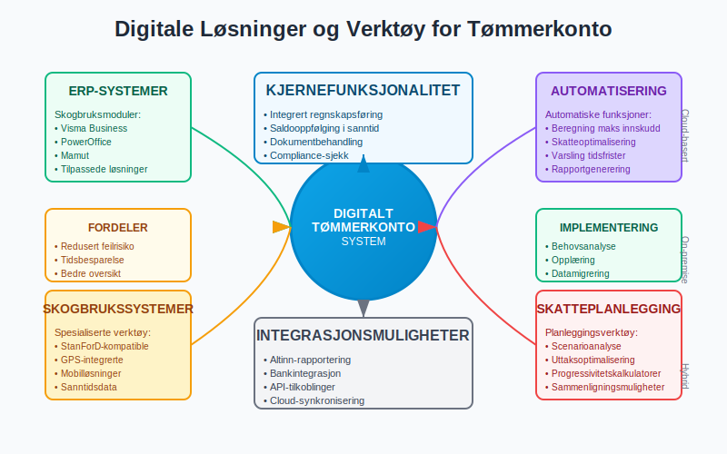
Sammenligning med Andre Spare- og Utjevningsordninger
Andre Regnskapsbaserte Ordninger
| Ordning | Formål | Bransje | Tidsbegrensning |
|---|---|---|---|
| Tømmerkonto | Inntektsutjevning | Skogbruk | 10 år |
| Opptjeningskonto | Fiskere | Fiskeri | 10 år |
| Avsetning | Generell | Alle | Varierer |
| Investeringsfond | Investering | Alle | 8 år |
Fordeler vs. Ulemper
Fordeler:
- Rentefri sparing
- Fleksible uttaksmuligheter
- Skattemessig optimalisering
- Stabil økonomisk planlegging
Ulemper:
- Tidsbegrenset ordning
- Kun for skogbruk
- Krever god administrasjon
- Begrenset innskuddsramme
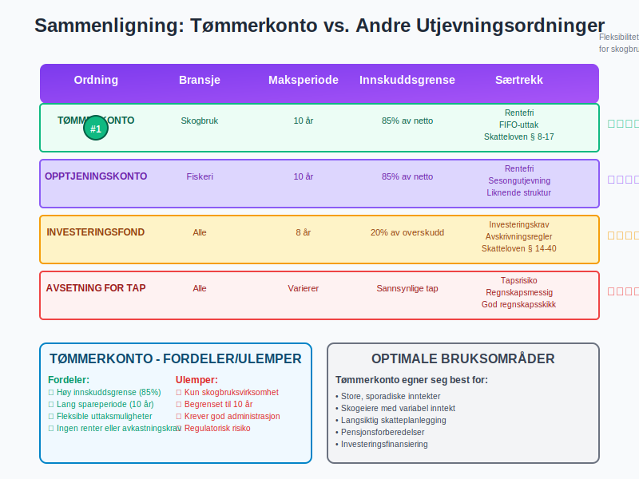
Risikofaktorer og Utfordringer
Økonomiske Risikofaktorer
- Markedsrisiko: Endringer i tømmerpriser
- Regulatorisk risiko: Endringer i skatteloven
- Likviditetsrisiko: Midler bundet i 10 år
- Inflasjonrisiko: Verdifall over tid
Operasjonelle Utfordringer
- Kompleks administrasjon: Krever fagkunnskap
- Dokumentasjonskrav: Omfattende bokføring
- Tidsfrister: Må overholdes nøye
- Skattemessig optimalisering: Krever planlegging
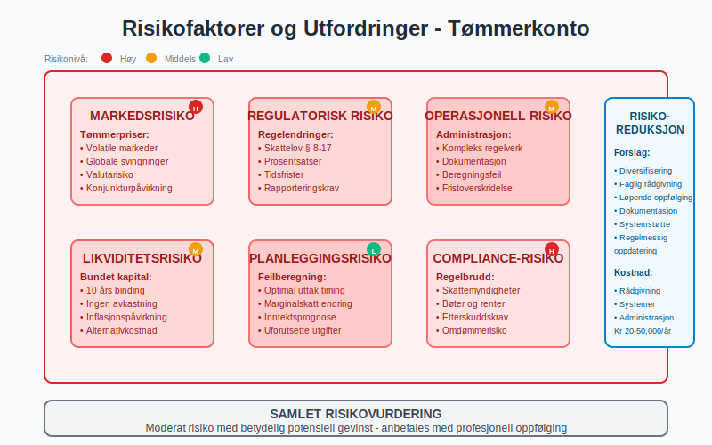
Fremtidige Utviklingstrekk
Modernisering av Skogbruksregnskap
Fremtidens tømmerkonto vil preges av:
- Automatisering: AI-baserte beregninger
- Sanntidsrapportering: Kontinuerlig oppfølging
- Bærekraftsmål: Integrert ESG-rapportering
- Digitalisering: Papirløse prosesser
Regulatoriske Endringer
Potensielle endringer inkluderer:
- Utvidede tidsrammer: Lengre spareperioder
- Økte innskuddsrammer: Høyere prosentandeler
- Nye målgrupper: Utvidelse til andre grupper
- Internasjonalisering: EU-tilpasning
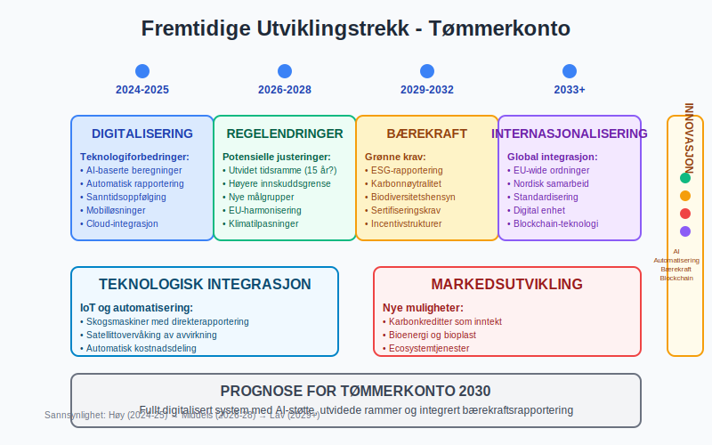
Beste Praksis for Implementering
Planleggingsfase
Trinn 1: Vurdering
- Analyser skogbruksaktivitet
- Vurder inntektspotensial
- Planlegg skattemessig strategi
Trinn 2: Etablering
- Sett opp regnskapssystem
- Etabler dokumentasjonsrutiner
- Utarbeid uttaksstrategi
Operasjonell Fase
Løpende oppgaver:
- Månedlig avstemming
- Kvartalsvis vurdering
- Årlig skatteplanlegging
- Strategisk uttaksplanlegging
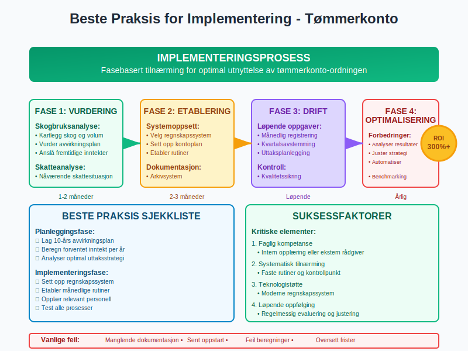
Konklusjon
Tømmerkonto representerer en viktig mulighet for skogeiere til å optimalisere skatteplanlegging og sikre stabil økonomisk utvikling. Ordningen krever god forståelse av regnskaps- og skatteregler, men gir betydelige fordeler ved riktig anvendelse.
For å få maksimal nytte av tømmerkontoordningen bør skogeiere:
- Etablere solid regnskapssystem
- Planlegge langsiktig strategi
- Følge opp utviklingen løpende
- Søke faglig bistand ved behov
Med riktig anvendelse kan tømmerkonto være et kraftfullt verktøy for bærekraftig skogbruksøkonomi og optimal skatteplanlegging.